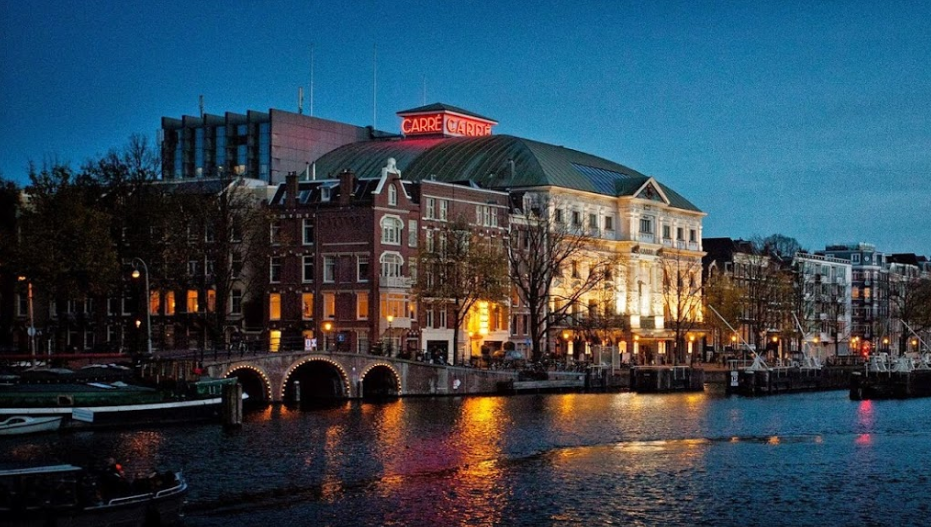
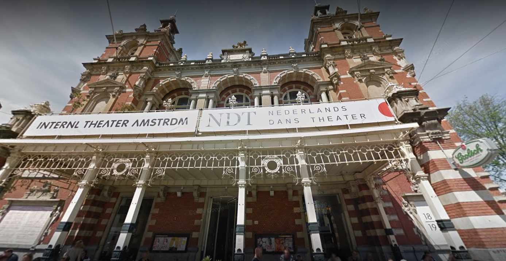
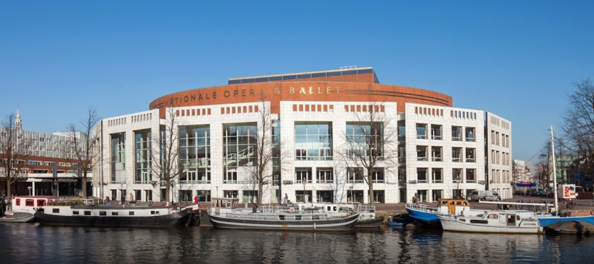

Theaters in Amsterdam
Watch our beautiful talented performances
Koninklijk Theater Carré
Location: Amstel 115-125
This theatre was named after circus manager Oscar Carré, who built a theatre on the Amstel River. Carré hosts big shows such as musicals, cabaret and ballet. For more information, visit their website via www.carre.nl.
Internationaal Theater Amsterdam
Location: Leidseplein 26
Internationaal Theater Amsterdam at Leidseplein originated from Amsterdam’s first theatre, built in 1617. This theatre boasts an extensive collecAmsterdam 104 tion of portraits of famous Dutch actors and actresses. The theatre is also home to a cafe-restaurant, and in summer, the outdoor terrace is a wonderful place to soak up the city atmosphere.
Het Muziektheater
Location: Amstel 3
Het Muziektheater shares their building with the town hall of Amsterdam. The nickname of the building is Stopera, referring to both the town hall(stadhuis) and the Opera. At Het Muziektheater, you can see Dutch Opera and National Ballet, as well as other performances by guest companies. Students have the chance to buy last-minute tickets at a cheaper price. Ask at the box office, about 15 minutes before the show starts, to see if there’s a spare ticket.